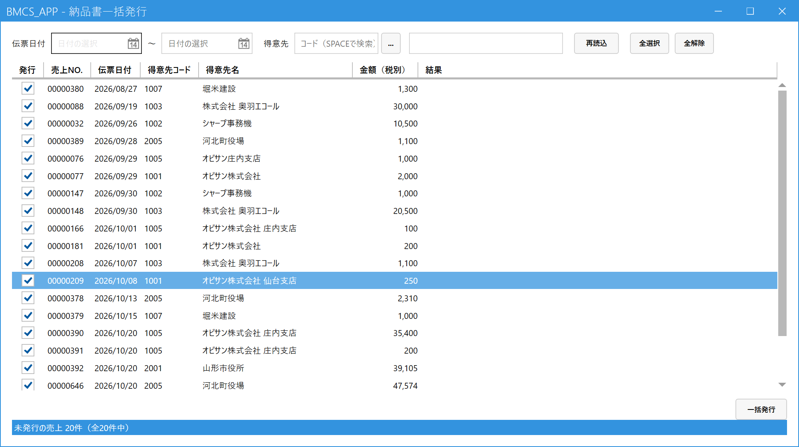

納品書をまとめて発行する
こんなときに使います
売上を登録したときに納品書を出さなかった（「いいえ」を選んだ）分を、後からまとめて印刷します。
納品書がまだ発行されていない売上だけが一覧に出るので、出し忘れの確認にも使えます。
売上を登録したときに納品書を出さなかった（「いいえ」を選んだ）分を、後からまとめて印刷します。
納品書がまだ発行されていない売上だけが一覧に出るので、出し忘れの確認にも使えます。
1.画面を開く
メインメニューの「受注・売上」の中の「納品書一括発行」をクリックします。画面を開くと、未発行の売上がすべて一覧に出ます。画面下に「未発行の売上 ○件」と件数が表示されます。
2.発行する伝票を選ぶ

- 伝票日付：期間で絞り込めます（空欄なら全期間）。
- 得意先：特定の得意先だけに絞り込めます。コード＋Enter、わからなければ Space で検索。
- 発行の列：チェックが入った伝票だけが印刷されます。出さない伝票はチェックを外します。
- 全選択／全解除：表示されている行のチェックを一括で付け外しします（絞り込んだ後は、表示中の行だけが対象です）。
- 結果：印刷が終わると、成功・失敗がここに表示されます。
- 一括発行：チェックした伝票を印刷します（3章）。
3.発行する
「一括発行」ボタンを押します。確認のメッセージのあと、チェックした伝票がプレビューなしで順番に印刷されます。
- 画面右下の一括発行を押す。
- 確認メッセージで「はい」を選ぶ。
- 印刷が終わるまで待つ。画面下に「納品書の印刷が完了しました（成功 ○件／失敗 ○件）」と出ます。
印刷に成功した伝票は「発行済み」になり、次に画面を開いたときや「再読込」を押したときは一覧に出なくなります。失敗した伝票は未発行のまま残るので、プリンタを確認してやり直します。
印刷するプリンタは、端末ごとに「マスタ管理」の「プリンタ設定」で決めます。未設定のときは、印刷のたびに印刷ダイアログが開きます。
1枚だけ見直したい・内容を確認してから出したいときは、この画面ではなく売上入力で伝票を呼び出し、印刷 (F11) を使います（プレビューが開きます）。